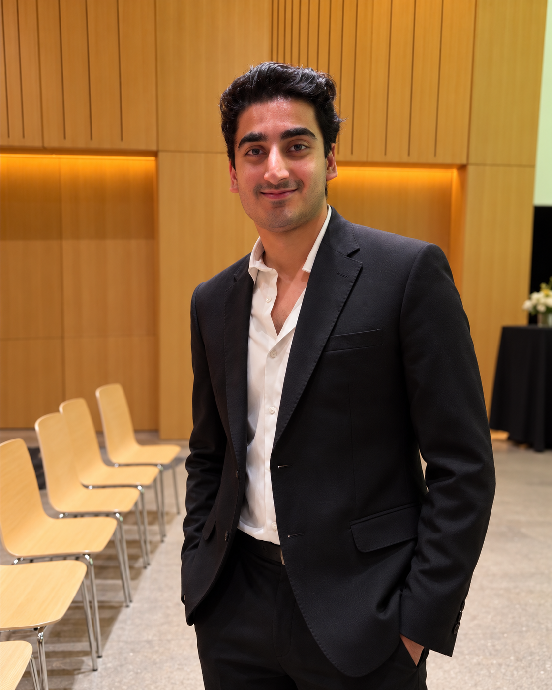

Open to 2027 internships & early-career roles
COMPUTER SCIENCE · SOFTWARE · SYSTEMS
TahaMohyuddin
Software developer
I study Computer Science at the University of Guelph, build practical software, and lead real-world operations at Loblaw. I like understanding how a system works — and making it work better for people.

I work across code and operations.
Different environments. The same discipline: understand the problem, coordinate the work, and improve what matters.
Projects with a purpose.
Four builds that show how I think about systems, users and technical execution. Explore the project details ↗
E-Commerce Analytics Platform
A team-built full-stack dashboard for revenue, product and customer analysis. React and Spring Boot connect to MariaDB, with GitLab CI/CD automating linting and tests.
View project on GitHub ↗EduPro · Adaptive Tutoring
Collaborative educational software with distinct student, teacher and parent workflows. A Next.js interface and Python/Flask backend support guided practice.
View project on GitHub ↗GradeManagerPlus
A Windows desktop grade-management prototype with student and administrator views, reporting and Microsoft Access records.
View project on GitHub ↗
vCard Manager
A cross-language contact tool combining native C file parsing, a Python terminal interface and MySQL integration.
View project on GitHub ↗Technologies I work with.
Tools drawn from coursework, projects and professional work — not a checklist of every technology I've encountered.
Languages & development
- Python
- Java
- JavaScript
- TypeScript
- C
- C#
- SQL
Web, data & systems
- React
- Next.js
- Spring Boot
- Flask
- REST APIs
- MariaDB
- Docker
Delivery & collaboration
- Git
- GitLab CI/CD
- Testing
- Agile / Scrum
- User stories
- Acceptance criteria
- UML
Operations & research
- SAP
- BOSS
- Inventory analysis
- Survey design
- Data interpretation
- Team leadership
Let's build something useful.
I'm interested in software engineering, business systems and product-focused opportunities. If my work looks relevant, I'd be glad to talk.